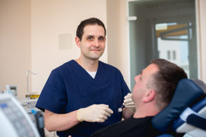

Zahnärzte
Katrin Kunath
Ich bin die große Sanfte. Mit viel Einfühlungsvermögen und Verständnis für große und kleine Ängste, schafft es jeder Patient über seinen Schatten zu springen. Packen wir es an!
- Ausbildung zur Zahnarzthelferin, 1997-2000
- Studium der Zahnmedizin an der Humboldt-Universität, 2000-2006
- Examen und Approbation, Dezember 2005
- Ausbildung im Fachbereich Implantatprothetik
Sprechzeiten:
- Montag und Dienstag 14.00 Uhr bis 20.00 Uhr
- Mittwoch und Donnerstag 7.30 Uhr bis 13.00 Uhr
- Freitag nach Vereinbarung
Urlaubszeiten:
- 01.11. - 03.11.17
- 27.12. - 01.01.18

Dr. Wieland Schmidt
Ich möchte die Praxis gern tatkräftig unterstützen und freue mich auf alle Patienten, ob groß oder klein.
- Studium der Zahnmedizin in Leipzig, 2000-2006
- Famulatur in Peru über das Deutsche Rote Kreuz 2004
- Promotion 2008
Sprechzeiten:
- Montag und Dienstag 7.30 Uhr bis 13.00 Uhr
- Mittwoch 14.30 Uhr bis 20.00 Uhr
- Donnerstag 14.00 Uhr bis 20.00 Uhr
- Freitag 7.30 Uhr bis 12.00 Uhr
Urlaubszeiten:
- 23.10. - 27.10.17
- 27.12. - 01.01.18
Cathleen Herrmann
Ob Angstpatient oder nicht, für jeden Patienten versuche ich mit viel Einfühlungsvermögen, eine individuelle Strategie für eine dauerhafte optimale Zahngesundheit zu finden.
- Ausbildung zur Zahnarzthelferin, 2002-2005
- Studium der Zahnmedizin an der Ernst-Moritz-Arndt-Universität Greifswald, 2005-2011
- Examen und Approbation, November 2011
- Promotionsstipendium und zahnärztliche Tätigkeit 2011 - 2013
- Assistenzzahnärztin 2013-2015
- seit 10/2016 angestellte Zahnärztin bei den Zahn-Docs
Sprechzeiten:
- Montag 08.00 bis 13.00 Uhr und 14.00 bis 20.00 Uhr
- Dienstag 14.00 - 20.00 Uhr
- Mittwoch und Donnerstag 07.30 bis 13.00 Uhr und 14.00 bis 15.30 Uhr
- Freitag 7.30 bis 12.00 Uhr
Urlaubszeiten:
- 27.11. – 28.11.17